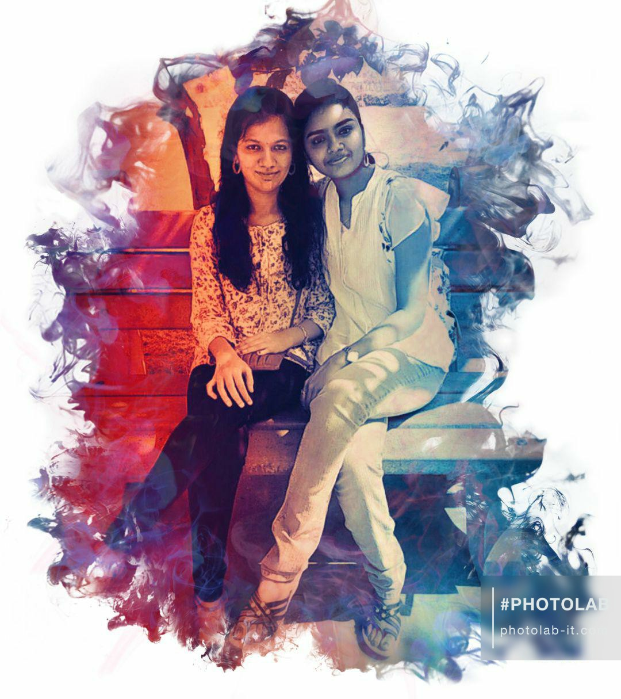

A picture is worth with a thousand words,
but the memories are priceless! ♥
Hey vaishu,
Hope u are doing good! (enough of being formal right 😂). We are in the end phase of our college life and am so fulfilled that I have picked few lifeline friends for my future! I still remember the first day with you in college(July 18,2016). The girl who wore red kuthi,black leggins nerdy look with specs(red frame I guess 🙄 ) sat next to me and started the conversation. There were many common stuffs between us. We have poor eye-sight, studied in st'johns school, having a younger brother etc etc. Apovae Wavelength started tadadada!!. Soon we 4 became a gang and started sharing all the school secrets, current crushes, dirty talks too. I liked your first gift for my birthday (purple watch ♥ ).But missed you on my birthday. HATE YOU for that, you could have come to forum. pooo 😤. Apdiyae pochu namma first year.
You are the first one in our gang to give birthday treat I guess. That food shop la "Uncle, edhachu sapda iruka?" is an ultimate phrase uk (haha). Though we didn't have that much time to share in class, we stayed connected in chats and shared daily happenings. I had good experience with you in Kaasiv tech. We tried to learn hacking, bunked and went to marrybrown, cream stone (those candid pics of us was LIT! but bit shaky. Thanks to suren ). Soon we met at perambur park. It was such a funny meet. We three played games, took funny shots (above pic was one among them) , went to church blah blah. So second year also apdiyae pochu.
Surprise nu my favourite cake oda vetuku vandhadhu was very close to me. I loved the little efforts you took to make me happy. I loved your mom's biriyani(yum yum). It was the first time I came to your house. Your mom is as sweet as you. Snapping cute pictures was best part on that day. KFC la yum we had best remembrance. You looked so bright in that blue t-shirt(hehe). Thankyou for making my belly full. kfc la Boys washroom lam use panna ponnu ne. U gave me double treat too.Enakaga location lam mathi meat & eat la vecha. Apro mami vetuku project panrom nu gang meet panadhu, RMD la symposium attend panadhu nu so much funs we had. Third year also beautifully went
So everything was going good right. I never expected a break in our friendship. I would say it all started from SIH. I don't blame anyone or anything here but it all happened. I undestood your situation. IK its tough to balence all the friends. But the thing is, mami and me felt that we were left alone as we didn't have enough members in our team. Kind of detached. But things got okay within few days. We thought inimae ela projects kum ipdi split irukum and we don't wish to hurt our friendship more. Adhan we called shivapriya to be in our team for TCS test. But it also turned the other way round. Enamo, now thinking on what happened, I wish I could have not taken those things that much serious. I constantly felt that I was left alone in SIH and that hurted a lot. Nothing much. But anyways our friendship united us. I was again so sadened on my birthday. We had semesters I understand, But... I expected something from friends. Some surprises, some efforts. I was surprised by Arvind but enaku friends also main. And thats y I expected stuffs. Enamo edhumae ila nu romba down aachu. Mami ku SIH sanda avolo irundhum we surprised her, Suvaegha kum semester time nu before week ae we surprised her, supraja ku also vetuku poi surprise panom. So expect panitan. Its again my fault. I felt like I was not that much important to you guys.
Apro that CMRIT contest, semester times uk things went very hard. This down feeling naala yae I showed more anger may be. I swear I didn't mean to use that unparliamentary word on message. Its just sentence got wrong. Apdiyae pesama poitom. But on that bus stop when we were about to board to bangalore, my anger went away in seconds. uk why, you just showed one hy (😅) Bangalore was our first official trip. We could have made it best and atleast we haven't made it worst. Knjm normal aachu between us but IK we all were hurted a lot so it takes even more time to come back as before. Within few days again fire aachu. Seriously many kept eyes on our gang. Sashu oda sister vetuku y vandhinga nu ketadhu romba stuck aachu. Felt really bad for coming after you guys apdi sonadhu apro. Direct ha CMRIT ku pogalam nu dha we thought. But Raman also kuda irundhan and engaluku ena panna nu therila that mrng adhan we came there. Enamo, Nanum romba tension la thitirukan and words vitrukan. But anyways, my anger was again changed on May 11. Aniku these things elam end panalam nu ne edutha step la I was so comforted. Things may happen, fights may happen but adhuku relationship vidradhu solution ila nu sonadhu la.. I got hopes in our friendship again. Really, It made me feel that am important to u and made me realize unukum ena, my friendship ha avolo pidikum as I like you. I love you for that move! And all our hard feelings went. Elam palaiya mari aachu ♥. Apro we got busy with our career. Am so happy for ur GRE, IELTS score, so happy that you got top universities. And understand one thing, am not only possessive on arvind but on friends too. Even ne ena replace panalum or avoid panalum adhum hurt aagum(😇). And enada iva past lam again kondu vara nu nenaikadha. These stuffs happened between us and we can proudly say our friendship broke all the hurdles.
Our second trip to bangalore was preety good. Nalla enjoy panom except the ending 😑. Symposium was also another good part. First time nenga 4 perum onna vetuku vandha day was very spl to me. I longed for that actually. Really I loved the video you made for me on my birthday. Ur feelings share panadhu, enakaga knjm time spend panadhu, really I wish for these kind of thing rather than gifts. Indha lockdown la also sudden ha text panna apo kuda, elamae share panadhu, feelings sonadhu.. ukw thats the bond between us. I'll cherish our friendship forever. Trust me, you are really a good and true friend. I can proudly say that you are responsible for our relationship to be stronger now. Ne friends kaga ena vena panuva. You dont show ego and you do respect and care more for them. I feel lucky to be ur friend. I can see some unique bond with us and I never wanna lose that in my life.
Feeling so light now. On this friendhip day, I just ask you for one thing. "Keep in touch" forever. Wherever you go, whatever position you are in, 'remember me' and thats all I want from you. Stay blessed with sashu and IK your career will be great!. Hope you loved this page! and our four years journey splashed I guess. Take care, Stay safe, vetla elarum ketadha sollu. Before winding up, take a quick look at this.
Click the link below for a little surprise!
Loosekal Jakiradhai
With love,
Your darling.